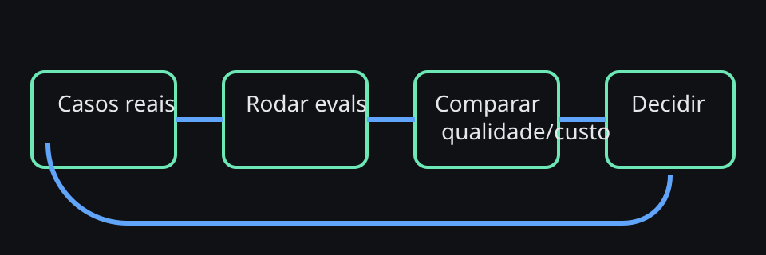

Sem eval, você só descobre regressão quando o usuário sente. Benchmark bom é o que protege operação, não o que gera o gráfico mais bonito.
Capítulo 29 de 34AvançadoGolden sets · regressão · custo
Evals e benchmarking de agentes
Depois que o OpenClaw entra no dia a dia, a pergunta muda de “funciona?” para “continua funcionando bem depois de cada mudança?”. Este capítulo mostra como responder isso de forma leve, prática e repetível.
Diagrama — ciclo mínimo de evals

O que é um eval útil em OpenClaw
Eval útil não é uma prova acadêmica; é um mecanismo para detectar regressão antes que ela chegue ao usuário. Em OpenClaw, isso normalmente significa escolher tarefas repetíveis, com entrada conhecida, e comparar saída, latência, custo, uso de ferramenta e necessidade de intervenção humana.
Regra prática: comece com um conjunto pequeno de cenários que representam trabalho real — onboarding, busca em memória, delegação, aprovação, troubleshooting e automação simples.
Quatro níveis de benchmark
Nível
O que medir
sanidade
se o fluxo ainda funciona fim a fim
qualidade
se a resposta continua correta, útil e segura
performance
latência, número de turnos, uso de ferramentas e retries
economia
custo por tarefa, contexto consumido e taxa de escalonamento
Como montar um golden set pequeno
- Liste de 8 a 20 tarefas frequentes e dolorosas.
- Escreva resultado esperado em linguagem de operador, não só em termos de tokens.
- Marque quais tarefas permitem variação criativa e quais exigem formato estrito.
- Reexecute após mudanças de prompt, modelo, skill ou workflow.
Métricas que realmente ajudam
- task success rate: a tarefa terminou de forma aceitável?
- handoff rate: quantas vezes o humano precisou resgatar o fluxo?
- tool reliability: a ferramenta respondeu e o agente a usou direito?
- custo por resultado útil: não basta ser barato; precisa continuar bom.
Receita — benchmark antes de trocar modelo
- Escolha 10 tarefas reais do seu uso.
- Rode com o modelo atual e capture notas de qualidade + custo.
- Rode com o modelo candidato.
- Compare regressão de segurança, clareza, formato e latência.
- Troque só se o ganho líquido fizer sentido para o seu contexto.
Exercício: pegue uma automação recorrente sua e defina três sinais de sucesso que um humano conseguiria auditar em menos de 2 minutos.